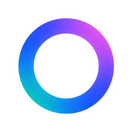

Meta AI este un asistent AI creat de Meta, integrat în aplicații precum WhatsApp, Messenger și Instagram, în funcție de regiune și versiune. Este folosit pentru întrebări rapide, idei și generare de conținut simplu.
Meta a început să promoveze Meta AI ca asistent și ca set de funcții AI în 2023, odată cu extinderea modelelor Llama și a instrumentelor pentru conversație și creație în aplicațiile sale.
Se evidențiază prin faptul că este integrat direct în aplicații sociale folosite zilnic. În spate, Meta dezvoltă și publică și modele Llama, cunoscute pentru varianta open weight folosită de multe proiecte.
Este folosit pentru întrebări de tip căutare, idei pentru postări, rezumate, planuri simple, clarificări și, în unele versiuni, pentru generare de imagini sau efecte creative.
Poate greși sau poate interpreta greșit cererea. Fiind integrat în aplicații sociale, fii atent la datele personale pe care le scrii și la setările de confidențialitate ale contului.